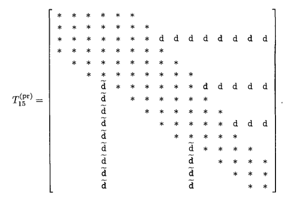

下一节：算法
上一级：带状Lanczos方法
上一节：收缩
基本性质
经过j次迭代后，该算法生成了向量(7.62)。引入以下符号将更为方便：
V_j = \left[ \begin{array}{cccc}v_1 & v_2 & \cdots & v_j\end{array} \right],\quad W_j = \left[ \begin{array}{cccc}w_1 & w_2 & \cdots & w_j\end{array} \right] \tag{7.63}
其中V_j和W_j分别是右和左Lanczos向量构成的矩阵(7.62)。这些向量被构造为双正交的。利用符号(7.63)，双正交性可以简洁地表述为：
W_j^T V_j = D_j = {\mathop{\rm diag}\nolimits}\left(\delta_1,\delta_2,\ldots,\delta_j\right). \tag{7.64}
为了确保下一组Lanczos向量的双正交性，算法涉及除以对角项\delta_k，如(7.64)所示。因此，一旦出现
\delta_k = w_k^T v_k = 0,\quad \mathrm{但}\quad v_k,\; w_k \not=0, \tag{7.65}
算法必须立即停止。这种情况(7.65)称为算法的“崩溃”。尽管可以通过引入所谓的“前瞻”来修正崩溃，但为了简化讨论，这里仅讨论不带前瞻的带状Lanczos算法。
经过j次迭代后，除了(7.62)，算法还构造了向量
\hat{v}_{j+1},\hat{v}_{j+2},\ldots,\hat{v}_{j+m_c}\quad \mathrm{和}\quad\hat{w}_{j+1},\hat{w}_{j+2},\ldots,\hat{w}_{j+p_c}. \tag{7.66}
这些向量\hat{v}_{j+1},\hat{v}_{j+2},\ldots,\hat{v}_{j+m_c}是下一组m_c个右Lanczos向量的候选，\hat{w}_{j+1},\hat{w}_{j+2},\ldots,\hat{w}_{j+p_c}是下一组p_c个左Lanczos向量的候选。这里，m_c是右起始向量数m减去在前j次迭代中右块Krylov序列发生的缩减次数，p_c是左起始向量数p减去在前j次迭代中左块Krylov序列发生的缩减次数。向量(7.66)被构造为满足双正交关系
\begin{aligned}
W_j^T \hat{v}_{k} &= 0 \quad \mathrm{对所有}\quad k=j+1,j+2,\ldots,j+m_c, \\ \hat{W}_j^T v_{k} &= 0 \quad \mathrm{对所有}\quad k=j+1,j+2,\ldots,j+p_c.
\end{aligned} \tag{7.67}
算法内置了一个基于向量(7.66)的简单缩减过程。实际上，在第j+1次迭代时，右块Krylov序列的精确缩减等价于\hat{v}_{j+1}=0。因此，在算法中，检查\left\Vert\hat{v}_{j+1}\right\Vert _2是否小于某个合适的缩减容差。如果是，向量\hat{v}_{j+1}被缩减，m_c减1；否则，\hat{v}_{j+1}被归一化为下一个右Lanczos向量v_{j+1}。类似地，左块Krylov序列的精确缩减等价于\hat{w}_{j+1}=0。在算法中，检查\left\Vert\hat{w}_{j+1}\right\Vert _2是否小于缩减容差。如果是，向量\hat{w}_{j+1}被缩减，p_c减1；否则，\hat{w}_{j+1}被归一化为下一个左Lanczos向量w_{j+1}。
用于生成向量(7.62)和(7.66)的递推关系可以简洁地总结如下：
\begin{aligned}
A V_j & = V_j T_j + \left[ \begin{array}{c} 0 & \cdots & 0 & \hat{v}_{j+1} & \hat{v}_{j+2} & \cdots & \hat{v}_{j+m_c}\end{array} \right] + \hat{V}_j^{\rm {(dl)}}, \\ A^T W_j & = W_j \tilde{T}_j + \left[ \begin{array}{c} 0 & \cdots & 0 & \hat{w}_{j+1} & \hat{w}_{j+2} & \cdots & \hat{w}_{j+p_c}\end{array} \right] + \hat{W}_j^{\rm {(dl)}}.
\end{aligned}\tag{7.68}
这里，T_j和\tilde{T}_j是j\times j矩阵，其元素选择使得双正交条件(7.64)和(7.67)得到满足。矩阵\hat{V}_j^{\rm {(dl)}}在(7.68)中包含大部分零列，以及在前j次迭代中被缩减的\hat{v}_k向量。矩阵\hat{W}_j^{\rm {(dl)}}在(7.68)中包含大部分零列，以及在前j次迭代中被缩减的\hat{w}_k向量。我们注意到m-m_c是被缩减的\hat{v}_k向量的数量，p-p_c是被缩减的\hat{w}_k向量的数量。事实证明，双正交性只需在m_c+p_c+1个连续的Lanczos向量之间显式强制，并且一旦发生缩减，还需与p-p_c个固定的早期左Lanczos向量和m-m_c个固定的早期右Lanczos向量进行双正交。因此，矩阵T_j和\tilde{T}_j“基本上”是带状的。更准确地说，T_j的下带宽为m_c+1，上带宽为p_c+1，每次\hat{v}_{k}向量被缩减时，下带宽减少1，每次\hat{w}_{k}向量被缩减时，上带宽减少1。此外，每次\hat{w}_{k}向量被缩减时，T_j在带状部分之外和右侧的固定行中会有非零元素。更准确地说，每次由\hat{w}_{k}向量缩减引起的行的行索引由k - p_c(k)给出，其中k是发生缩减的迭代次数，p_c(k)是该迭代时的相应p_c值。因此，矩阵T_j可以写为
T_j = T_j^{\rm {(b)}} + T_j^{\rm {(d)}}, \tag{7.69}
其中T_j^{\rm {(b)}}是带状矩阵，T_j^{\rm {(d)}}包含由于\hat{w}_{k}向量缩减引起的带状部分上方的水平“尖峰”。类似地，
\tilde{T}_j = \tilde{T}_j^{\rm {(b)}} + \tilde{T}_j^{\rm {(d)}},
其中带状部分\tilde{T}_j^{\rm {(b)}}的下带宽为p_c+1，上带宽为m_c+1，\tilde{T}_j^{\rm {(d)}}包含由于\hat{v}_{k}向量缩减引起的带状部分上方的水平“尖峰”。
矩阵T_j和\tilde{T}_j的元素不是相互独立的。更准确地说，设定
T_j^{\rm (pr)} = T_j +D_j^{-1} \left(\tilde{T}_j^{\rm {(d)}}\right)^T D_j,\quad \tilde{T}_j^{\rm (pr)} = \tilde{T}_j +D_j^{-1} \left(T_j^{\rm {(d)}}\right)^T D_j, \tag{7.70}
我们有
T_j^{\rm (pr)} = D_j^{-1} \left(\tilde{T}_j^{\rm (pr)}\right)^T D_j, \tag{7.71}
其中D_j是由(7.64)给出的对角矩阵。将(7.69)代入(7.70)中T_j^{\rm (pr)}的定义，我们得到关系
T_j^{\rm (pr)} = T_j^{\rm {(b)}} + T_j^{\rm {(d)}} +D_j^{-1} \left(\tilde{T}_j^{\rm {(d)}}\right)^T D_j,
这表明T_j^{\rm (pr)}由带状部分T_j^{\rm {(b)}}、由于\hat{w}_{k}向量缩减引起的带状部分上方的水平尖峰以及由于\hat{v}_{k}向量缩减引起的带状部分下方的垂直尖峰组成。
例如，考虑右起始向量数m=3和左起始向量数p=5的情况。假设在前j=15次迭代中，\hat{w}_k向量在迭代k=8、k=11和k=13时发生缩减，\hat{v}_k向量在迭代k=7和k=12时发生缩减。在这种情况下，矩阵T^{(\rm pr)}_{15}具有以下稀疏结构：

在这里，{*}表示带状部分内可能非零的元素，T_{15}^{\rm {(b)}}；{\tt d}表示由于在迭代k=8、k=11和k=13时对\hat{w}_k向量进行收缩而可能非零的元素；而\tilde{{\tt d}}表示由于在迭代k=7和k=12时对\hat{v}_k向量进行收缩而可能非零的元素。注意，收缩已将初始的下带宽m+1 = 4在迭代j=15时减少到m_c+1=2，并将初始的上带宽p+1 = 6在迭代j=15时减少到p_c+1 = 3。
在进行了j次带状Lanczos算法迭代后，通过将矩阵A对由V_j列张成的子空间进行斜投影，并垂直于由W_j列张成的子空间，可以得到NHEP（7.58）的近似特征解。更准确地说，这意味着我们正在寻找形式为x_i^{(j)} = V_j z_i^{(j)}的（7.58）的近似特征向量，并且在将这个假设的x_i^{(j)}代入（7.58）后，我们从左边乘以W_j^T。这产生了广义特征值问题
W_j^T A V_j z_i^{(j)} = \theta_i^{(j)} W_j^T V_j z_i^{(j)},\quad i=1,2,\ldots,j. \tag{7.72}
利用双正交关系（7.64）和（7.67），很容易验证在（7.70）中定义的矩阵T_j^{\rm (pr)}满足
T_j^{\rm {(pr)}} = \left(W_j^T V_j\right)^{-1} W_j^T A V_j. \tag{7.73}
根据（7.73），广义特征值问题（7.72）等价于标准特征值问题
T_j^{\rm {(pr)}} z_i^{(j)} = \theta_i^{(j)} z_i^{(j)},\quad i=1,2,\ldots,j.
我们强调，在算法中，我们使用（7.70）中的公式来获得T_j^{\rm (pr)}的条目，而不是（7.73）。
带状Lanczos算法在达到m_c=0或p_c=0时终止。在m_c=0的情况下，已经发生了m次\hat{v}_k向量的收缩，因此右块Krylov序列（7.60）被耗尽。在p_c=0的情况下，已经发生了p次\hat{w}_k向量的收缩，因此左块Krylov序列（7.61）被耗尽。
首先考虑由于m_c=0导致的终止。然后，（7.68）中右Lanczos向量的关系可以重写如下：
A V_j - V_j T_j^{\rm {(pr)}} = P_j \hat{V}_j^{\rm {(dl)}}. \tag{7.74}
这里，矩阵
P_j = I - V_j D_j^{-1} W_j^T,\quad \mathrm{其中}\quad D_j = W_j^T V_j, \tag{7.75}
表示由P_j V_j = 0和P_j x = x对W_j^T的零空间中所有x的斜投影。现在让\theta_i^{(j)}和z_i^{(j)}是T_j^{\rm {(pr)}}的任意特征对，并假设z_i^{(j)}被归一化使得\left\Vert z_i^{(j)}\right\Vert _2 = 1。回想一下，对\theta_i^{(j)}和x_i^{(j)} = V_j z_i^{(j)}用作A的近似特征解。从（7.74）可以得出，这个近似特征解的残差可以如下界定：
\left\Vert A x_i^{(j)} - \theta_i^{(j)} x_i^{(j)} \right\Vert_2 = \left\Vert P_j \hat{V}_j^{\rm{(dl)}} z_i^{(j)} \right\Vert_2 \leq \left\Vert P_j \right\Vert _2 \cdot\left\Vert \hat{V}_j^{\rm {(dl)}} \right\Vert _2. \tag{7.76}
特别是，如果只进行精确收缩，那么\hat{V}_j^{\rm {(dl)}} = 0，并且（7.76）表明T_j^{\rm {(pr)}}的每个特征值\theta_i^{(j)}确实是A的特征值。
类似地，在由于p_c=0导致的终止情况下，（7.68）中左Lanczos向量的关系可以重写如下：
A^T W_j - W_j \tilde{T}_j^{\rm {(pr)}} = P_j^T \hat{W}_j^{\rm {(dl)}}. \tag{7.77}
这里，P_j再次是（7.75）中定义的矩阵。现在让\theta_i^{(j)}和\tilde{z}_i^{(j)}是(T_j^{\rm {(pr)}})^T的任意特征对，并假设\tilde{z}_i^{(j)}被归一化使得\Vert D_j^{-1} \tilde{z}_i^{(j)}\Vert _2 = 1。注意，\tilde{z}_i^{(j)}的复共轭是T_j^{\rm {(pr)}}的左特征向量。对\theta_i^{(j)}和y_i^{(j)} = W_j D_j^{-1} \tilde{z}_i^{(j)}表示A^T的近似特征解。从（7.77）可以得出，这个近似特征解的残差可以如下界定：
\left\Vert A^T y_i^{(j)} - \theta_i^{(j)} y_i^{(j)} \right\Vert_2 = \left\Vert P_j^T \hat{W}_j^{\rm{(dl)}} D^{-1}_j \tilde{z}_i^{(j)} \right\Vert_2 \leq \left\Vert P_j^T \right\Vert _2 \cdot\left\Vert \hat{W}_j^{\rm {(dl)}} \right\Vert _2. \tag{7.78}
特别是，如果只进行精确收缩，那么\hat{W}_j^{\rm {(dl)}} = 0，并且（7.78）表明T_j^{\rm {(pr)}}的每个特征值\theta_i^{(j)}确实是A^T的特征值，因此也是A的特征值。
下一节：算法
上一级：带状Lanczos方法
上一节：收缩
Susan Blackford
2000-11-20